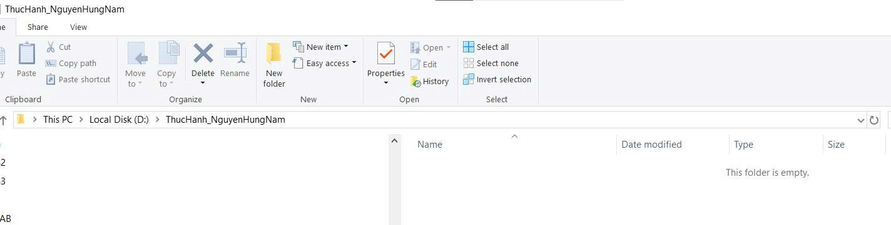
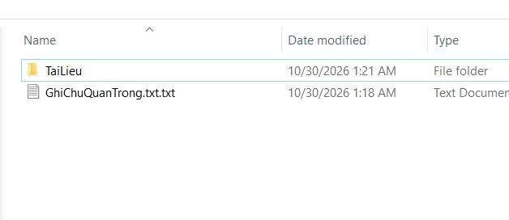
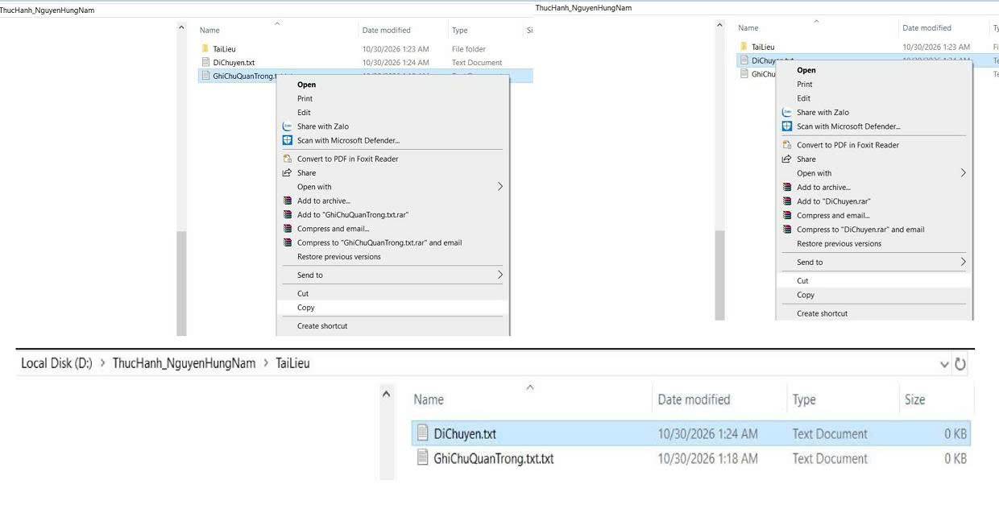
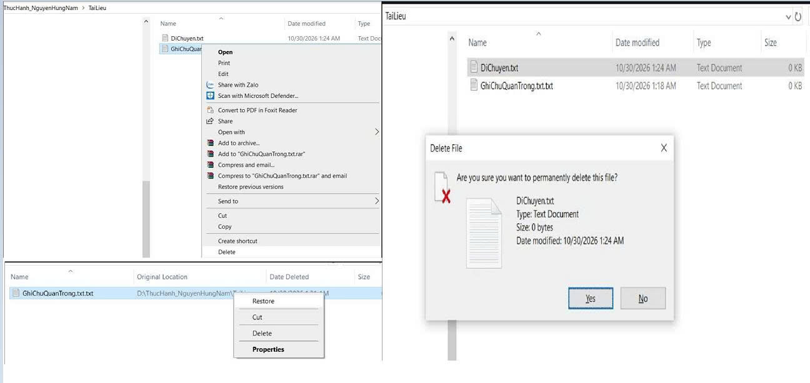
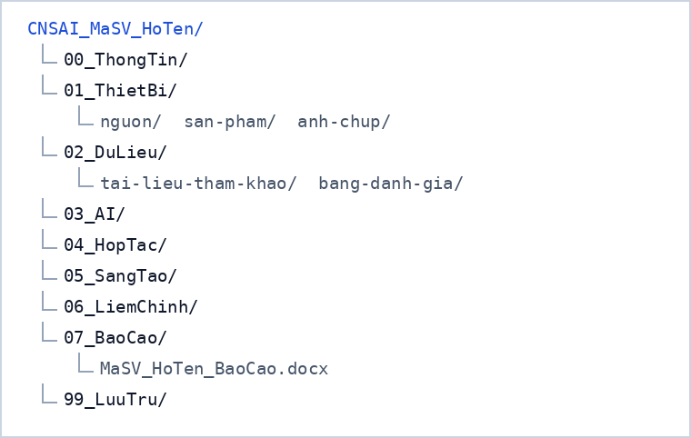

Bài 1 · Chương 1: Máy tính và các thiết bị ngoại vi · Điểm tối đa 0,5
Bài 1: Thao tác cơ bản với tệp tin và thư mục
a) Mục tiêu bài tập
Yêu cầu của bài tập: thực hành thành thạo việc tạo, đổi tên, sao chép, di chuyển và xóa tệp tin, thư mục trên hệ điều hành Windows (có thể áp dụng tương tự cho macOS/Linux), sau đó thiết lập cấu trúc thư mục tối ưu và quy tắc đặt tên tệp cho toàn bộ học phần.
Kỹ năng được rèn luyện: sử dụng File Explorer và các phím tắt (Windows + E, Ctrl + C, Ctrl + X, Ctrl + V, Shift + Delete); phân biệt rõ Copy, Cut và Delete; khôi phục tệp từ Thùng rác; tổ chức và đặt tên tệp có hệ thống.
b) Tóm tắt quá trình thực hiện
Các bước thực hiện
- Mở File Explorer bằng tổ hợp phím Windows + E.
- Vào This PC, mở ổ đĩa không phải ổ hệ thống (ổ D: hoặc E:); nếu chỉ có ổ C: thì vào thư mục Documents.
- Tạo thư mục mới tên ThucHanh_HoTen (ví dụ ThucHanh_NguyenVanA): chuột phải vào khoảng trống, chọn New, chọn Folder.
- Mở thư mục vừa tạo, tạo tệp văn bản GhiChu.txt (New, Text Document) rồi đổi tên thành GhiChuQuanTrong.txt bằng lệnh Rename.
- Tạo thư mục con TaiLieu; sao chép GhiChuQuanTrong.txt vào TaiLieu bằng Copy và Paste.
- Quay lại thư mục gốc, tạo tệp DiChuyen.txt rồi dùng Cut và Paste để chuyển vào TaiLieu; kiểm tra tệp gốc không còn ở vị trí cũ.
- Trong TaiLieu, xóa GhiChuQuanTrong.txt bằng Delete (tệp vào Thùng rác).
- Chọn DiChuyen.txt, nhấn Shift + Delete để xóa vĩnh viễn, xác nhận cảnh báo.
- Mở Recycle Bin, chuột phải vào GhiChuQuanTrong.txt, chọn Restore để khôi phục về vị trí ban đầu.
Công cụ đã sử dụng
- Windows File Explorer
- Thùng rác (Recycle Bin)
- Công cụ chụp màn hình (Snipping Tool / phím Windows + Shift + S)
Khó khăn và cách giải quyết
| Khó khăn | Cách giải quyết |
|---|---|
| Tên tệp thành GhiChu.txt.txt do Windows ẩn phần mở rộng. | Bật View > Show > File name extensions trong File Explorer trước khi đổi tên. |
| Nhầm lẫn giữa Copy và Cut nên tệp gốc biến mất ngoài ý muốn. | Ghi nhớ: Copy giữ lại bản gốc, Cut chuyển bản gốc; kiểm tra lại cả hai thư mục sau khi Paste. |
| Shift + Delete không thể hoàn tác. | Chỉ dùng cho tệp thử nghiệm; với tệp thật thì xóa thường để còn khôi phục từ Thùng rác. |
Khai báo sử dụng AI: [ghi rõ công cụ AI và mục đích đã dùng trong bài này; nếu không dùng, ghi "Không sử dụng AI"].
c) Sản phẩm cuối cùng
a) Bảng thao tác và kết quả kiểm tra
| Bước | Thao tác | Kết quả kiểm tra |
|---|---|---|
| 1 | Windows + E | File Explorer mở ra |
| 2–3 | Tạo thư mục ThucHanh_HoTen | Thư mục xuất hiện đúng ổ đĩa, đúng tên |
| 4–6 | Tạo GhiChu.txt, đổi tên thành GhiChuQuanTrong.txt | Tệp có đuôi .txt, tên đúng quy tắc |
| 7 | Tạo thư mục con TaiLieu | TaiLieu nằm bên trong ThucHanh_HoTen |
| 8 | Copy, Paste GhiChuQuanTrong.txt | Có 2 bản: thư mục gốc và TaiLieu |
| 9 | Tạo DiChuyen.txt, Cut, Paste vào TaiLieu | DiChuyen.txt chỉ còn ở TaiLieu |
| 10 | Delete GhiChuQuanTrong.txt trong TaiLieu | Tệp nằm trong Recycle Bin |
| 11 | Shift + Delete DiChuyen.txt | Tệp mất vĩnh viễn, không có trong Recycle Bin |
| 12 | Restore từ Recycle Bin | GhiChuQuanTrong.txt trở lại TaiLieu |




Sau khi hoàn tất, cấu trúc thực tế là: ThucHanh_HoTen chứa GhiChuQuanTrong.txt và thư mục TaiLieu; bên trong TaiLieu có GhiChuQuanTrong.txt (đã khôi phục). Tệp DiChuyen.txt đã bị xóa vĩnh viễn.
b) Cấu trúc thư mục tối ưu cho học phần
Từ bài thực hành, mình áp dụng cách tổ chức sau để lưu toàn bộ sản phẩm của học phần. Mỗi chương một thư mục, đánh số để luôn sắp xếp đúng thứ tự, và mỗi thư mục chia thành nguồn, sản phẩm và ảnh chụp.

c) Quy tắc đặt tên tệp
- Không dấu, không khoảng trắng, không ký tự đặc biệt. Dùng gạch dưới hoặc kiểu viết hoa từng chữ (ví dụ BaoCao_Chuong2.docx).
- Có số thứ tự ở đầu để sắp xếp tự động (01_, 02_, ...).
- Có ngày hoặc phiên bản khi tệp thay đổi nhiều lần: 20261024_BaoCao_v02.docx; tránh các tên như final_final.
- Tên ngắn, mô tả đúng nội dung, không quá 50 ký tự, phần mở rộng viết thường.
- Tệp nộp bài đặt theo mẫu giảng viên yêu cầu, ví dụ MaSV_HoTen_BaoCao.docx.